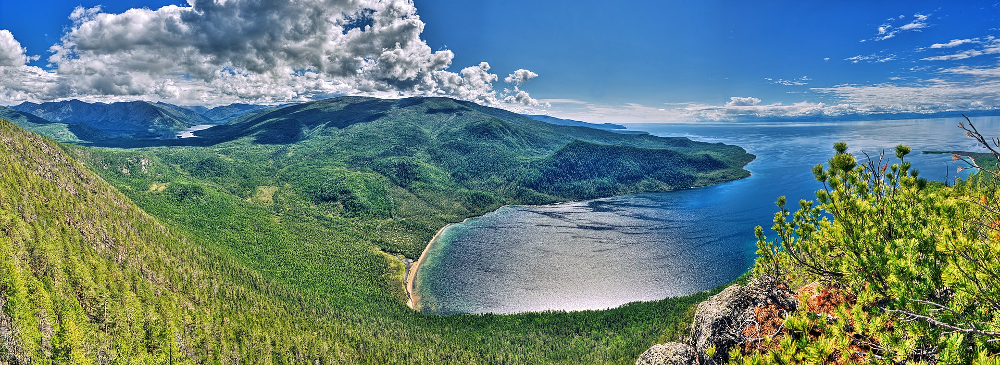

Находится в центре Азии на границе Иркутской области и Республики Бурятия в Российской Федерации . Озеро протянулось с юго-запада на северо-восток на 636 км в виде гигантского полумесяца. Ширина водоёма колеблется в пределах от 24 до 79 км. Дно Байкала в самой глубокой его части на 1187 метров ниже уровня Мирового океана. Высотная отметка уреза воды Байкала установлена (так как Байкал зарегулирован) в пределе 456—457 метров над уровнем моря, но в Тихоокеанской системе высот. В результате «реальный» уровень Байкала фактически неизвестен:

Происхождение Байкала до сих пор вызывает научные споры. Возраст озера учёные традиционно определяют в 25—35 млн лет. Этот факт также делает Байкал уникальным природным объектом, так как большинство озёр, особенно ледникового происхождения, живут в среднем 10—15 тысяч лет, а потом заполняются илистыми осадками и заболачиваются.
Однако существует также версия о молодости Байкала, выдвинутая доктором геолого-минералогических наук А. В. Татариновым в 2009 году, которая получила косвенные подтверждения во время второго этапа экспедиции «Миров» на Байкале. В частности, деятельность грязевых вулканов на дне озера позволяет учёным предполагать, что современной береговой линии Байкала всего лишь 8 тысяч лет, а глубоководной части — 150 тысяч лет.
Подробнее можно ознакомится по ссылки Эндемики